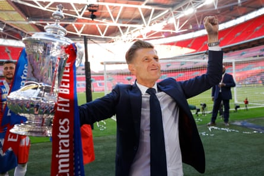
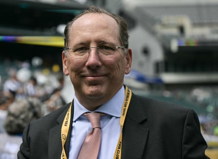

A s an emotional Steve Parish said, it felt like “winning the lottery and going to the counter and you don’t get the prize”. Confirmation from Uefa on Friday of Crystal Palace’s demotion from the Europa League to Conference League had been expected since European football’s governing body delayed its decision to await the outcome of Lyon’s appeal against being relegated to Ligue 2.
That did not make it any easier for Parish , who has proudly overseen Palace’s rise from the brink of extinction in 2010 to a first major trophy. When the final whistle blew at Wembley to seal Palace’s FA Cup final victory against Manchester City eight weeks ago, Parish was greeted by a massive bear hug from John Textor, who at that stage was Palace’s largest shareholder, but had spectacularly fallen out with the chair over not being allowed more of an influence.
The American businessman claimed this week he had immediately been concerned about how his involvement at Selhurst Park and Lyon – who then also had a decent chance of qualifying for the Europa League – would be viewed by Uefa. “I couldn’t believe it,” Textor said on TalkSport. “Holding the Cup next to the Prince [William], I was so happy. But I felt the gravity to it. And I was concerned.”
After Textor joined Parish and Palace’s other co-owners, Josh Harris and David Blitzer, to argue their case at a club financial control body (CFCB) hearing at Uefa’s Nyon headquarters at the start of June, there had been widespread confidence at Selhurst Park that Palace would satisfy the multi-club ownership regulations. Textor, who also said this week that he had been convinced he was about to complete a full takeover after attempting to buy out Harris and Blitzer two weeks before the Cup final, accelerated the sale of his 43% stake to the New York Jets owner, Woody Johnson, after the CFCB indicated that would help their cause.
Steve Parish believes it is a travesty of justice after Crystal Palace were demoted to the Conference League despite their FA Cup triumph.Photograph: Tom Jenkins/The Guardian
Parish said on Friday that Johnson had passed the Premier League’s owners’ and directors’ test and that everyone at Palace feel they have been made an example of by Uefa. “I don’t know anyone’s phone number there,” Parish said of the club’s relationship with Lyon, whose relegation was overturned on Wednesday.
“It’s an incredible travesty of justice. We’re not part of a multi-club organisation. [Uefa’s president] Aleksander Ceferin stood on a platform of supporting small clubs. We stood together with the Super League because I wanted to maintain that dream. I didn’t want a competition where clubs like us were locked out. Maybe if we weren’t Crystal Palace, if we were a different club, [the Uefa investigation] wouldn’t have even got this far.”
Uefa rejects any claim that Palace have been harshly treated. It regards the case as a clear breach of the regulations, saying on Friday it had reached that conclusion after an “assessment of the documentation submitted” by Lyon and Palace. Palace have yet to confirm they will appeal to the court of arbitration for sport, although that seems very likely given the depth of their anger. Uefa is understood to be bracing itself for the fight, having mentioned the possibility of an appeal in its statement. The CFCB, chaired by Sunil Gulati, a former president of the US Soccer Federation, has been under pressure to enforce regulations updated last year and allow teams who are part of a multi-ownership group to compete in a different competition when a workaround has not been found for them to play in the same one.
John Textor was Crystal Palace’s largest shareholder at the time of their FA Cup victory.Photograph: Juan Mabromata/AFP/Getty Images
Nottingham Forest’s owner, Evangelos Marinakis, placed his shares in a blind trust before Uefa’s 1 March deadline to ensure they would be able to join Olympiakos, another of his clubs, in the Champions League should they qualify. Forest finished seventh and in the Conference League, but stand to be promoted to the Europa League at Palace’s expense.
Textor’s failure to do the same with his Palace shares has cost the club dear. Palace have concerns that the decision by Cas to uphold Fifa’s banning of the Mexican club León from the Club World Cup because they are part of the same ownership group as another qualifier, Pachuca, could be an indicator of how they would fare in Lausanne. It is understood that any appeal would be fast-tracked to take place before the draw for the Conference League playoff round on 4 August, with Palace due to play the first leg three weeks later.
There is a chance that they could face Brøndby, who are owned by Blitzer’s consortium Global Football Holdings, should the Danish club get through two rounds of qualifying. Uefa sources confirmed that the CFCB cleared both clubs to play in the same competition having deemed that Blitzer does not have a decisive influence at Palace.
Parish is understood to have held a meeting with his co-owners, including Johnson, in New York on Friday evening to discuss their next move, and Textor is expected to switch his attention to investing in another English club – Sheffield Wednesday have been strongly linked – having reluctantly relinquished his Palace stake.
“I don’t care,” he responded on Thursday when asked if Palace supporters blamed him for their predicament. “If you get into this and you’re worried about what people think of you … there’s 10% of the fans that always hate you. I paid off debt, I helped the academy. I think that the smart Crystal Palace fan knows that I’m a guy who showed up and helped.”